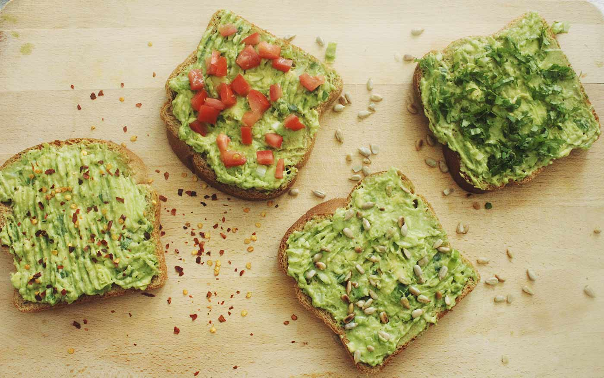

Ingredientes
- 2 rebanadas de pan integral
- 1 aguacate maduro
- Jugo de medio limón
- Sal y pimienta al gusto
- Huevo cocido o tomates cherry (opcional)
Instrucciones
- Tuesta el pan en una tostadora o sartén.
- Machaca el aguacate y mézclalo con jugo de limón, sal y pimienta.
- Unta la mezcla de aguacate sobre el pan tostado.
- Opcional: añade rodajas de huevo cocido o tomates cherry encima.
- Sirve y disfruta de un desayuno rápido y saludable.